Security Tools
We have gone around the block and back in learning about OneStream security. In this final chapter, we will look at how to test and report off the wonderful security framework you have implemented.
Security Tools
Security Reports
The best way to report off your security framework is to download and install a handful of Solution Exchange tools, all of which have a wealth of reports around security. Why reinvent the wheel when you can download and extend your OneStream platform with existing tools?
The first solution is Security Audit Reports, shown in Figure 8.1. You can reach this tool and other tools by going to the OneStream website, logging into the Solution Exchange, and searching by name.
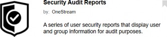
Figure 8.1
Once you have downloaded and set up this tool within an application, a dashboard profile called Security Audit Reports will appear within your application’s OnePlace pane. This dashboard contains approximately eight reports showing both user and security group activity.
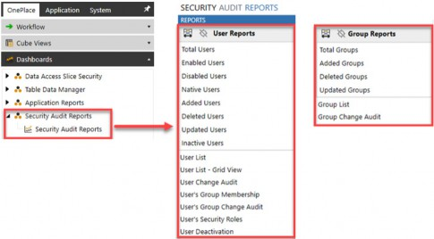
Figure 8.2
While this dashboard will only appear within the OnePlace pane for the application in which it was loaded, it is important to note that it works off the Framework database discussed in Chapter 2. So, no matter which application has this tool, you will be able to view security across your entire environment.
These reports show security as it relates to all users and security groups within the current environment’s framework database. These reports do not show security as it relates to the application of groups within a specific application, as discussed in Chapter 5; that information relates to the application database and tables, which are separate from your framework database.
This dashboard and related reports show information such as:
Changes to user IDs and security groups
Users’ group membership, including nested groups
De-activated users
All the reports contained within this tool can be run with Start Date and End Dates, allowing you to monitor your security and compliance changes over time. For example, if you monitor your security on a quarterly basis, you could review each quarter’s changes for the prior quarter using these date ranges.
The list of Enabled Users will allow you to monitor compliance with your OneStream license agreement. The Disabled Users and Deleted Users reports will allow you to monitor users (as discussed in Chapter 2) that have been disabled versus deleted. These reports are shown in Figure 8.3.
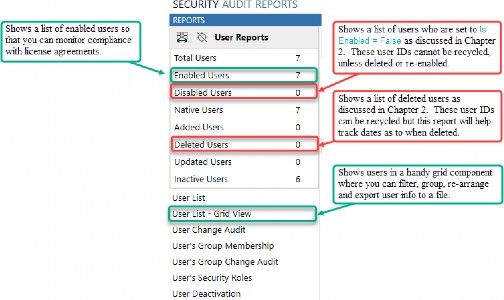
Figure 8.3
The most useful report in this tool is the User List – Grid View, which puts your users in a dashboard grid component that can be filtered, grouped, and exported to Excel for ease of use. The grid view will show your users and all user properties listed in Figure 8.4.
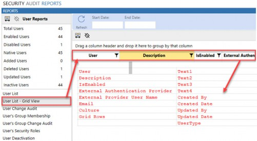
Figure 8.4
Another useful tool within the Solution Exchange is called Standard Application Reports, and is shown in Figure 8.5. Within this dashboard tool, there are several useful audit reports relating to security.
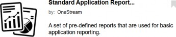
Figure 8.5
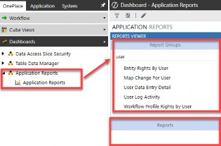
Once you have downloaded and set up this tool within an application, a dashboard profile called Application Reports will appear within the OnePlace pane (see Figure 8.6). This dashboard will appear within whichever application it was loaded and contains information from the Application Database Tables.
Figure 8.6 This dashboard shows information such as:
Entity and workflow rights by user ID
Mapping changes by user ID
Data entry info by user ID
User login activity
Both tools contain various bits of useful information for monitoring, auditing, and reporting off both framework and application security.
Within the Solution Exchange tool called Cloud Administration Tools (Figure 8.7) and available for customers on the OneStream cloud, is a tool called the User Management Console.
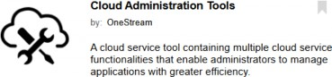
Figure 8.7
This tool helps manage the relationship between users hosted in Microsoft Azure Active Directory (Azure AD) and the OneStream framework database. With this dashboard, a system administrator can self-manage their Azure AD users in OneStream by inviting, creating, deleting (disabling) and importing users, and resetting passwords.
This User Management Console is only available to customers with Azure AD hosted by OneStream Cloud Services and to members of the native administrator’s security group. If your company fits these criteria, you may want to consider leveraging this Solution Exchange tool.
Continuing with Solution Exchange tools, the next one helps display slice security, and is called Data Access Slice Security.
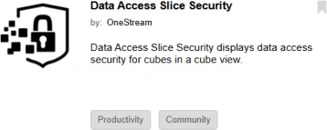
Figure 8.8
The Data Access Slice Security tool allows you to view the security discussed in Chapter 7 (aka slice) more easily. It allows you to view your slice security across all your cubes in a grid view component, which you can filter, group, and export to Excel for ease of use.
It takes the cube screen in the top half of Figure 8.9 and re-visualizes it in a dashboard grid, shown at the bottom of this same figure.
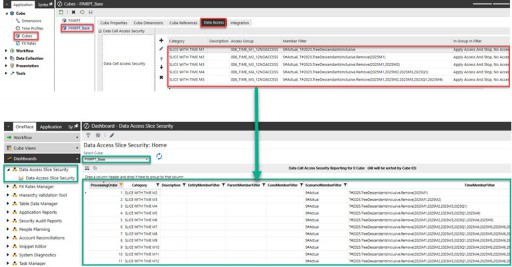
Figure 8.9
Lastly, the XML Security Remover Solution Exchange tool (Figure 8.10) allows consultants and administrators to modify all security references in an application extract .zip file. This is most useful when you extract an application without data and load that application into a different environment containing a different framework database.
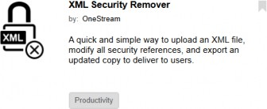
Figure 8.10
For example, this tool is useful when you want to load an application extract from one environment to another. Be aware that you would not use this if you want to load an application extract to a new application within the same environment.
As discussed in Chapter 2, each environment has its own security framework. And each application within an environment has various security groups assigned to application and data objects. Those security groups from one environment may not exist in the secondary environment to which you are loading an application.
As such, to avoid seeing (Unassigned) or blank security groups in the secondary environment, you can use this tool to change (aka “cleanse”) all security groups in the XML files to Everyone, Administrators, or Nobody security groups. As we learned previously, those three security groups exist in every customer environment. As such, they can be applied as default security groups via this tool.
The Solution Exchange offers an ever-improving set of tools, some with an additional partner fee, that can help you manage and report off your OneStream security. More information on all these solutions can be found by visiting the OneStream website and logging into the Solution Exchange. I encourage you to continually revisit the Solution Exchange as new tools are added regularly that may help you view and manage your security model.
In the next section, we will cover more ways you can migrate your security between environments, keeping security groups and users intact.
Security Tools
Migrating Security
It is very common for customers to have multiple environments, most commonly a production (PRD1) environment and a development (DEV1) environment. Again, the security framework – which includes all users, groups, and exclusion groups – is specific to each environment. As a result, the need can arise to migrate security between environments so that you can also copy applications between environments with ease. So, how do you achieve this in OneStream?
There are two primary ways you can tackle migration and keep your security in sync between environments:
Extract and Import
Framework Database Copy
Security Tools › Migrating Security
Extract and Import
A best practice is to extract the security from the source environment (e.g., PRD1) into an XML file that you can then load to a target environment (e.g., DEV1). This is a best practice because it is a more efficient (fewer steps) and seamless (can be managed by your administrator) way to keep your security in sync.
Let’s cover the steps to do this.
Go to the System tab > Load/Extract page > Extract tab
Choose Security under the File Type dropdown menu
Be sure to check the box in front of Extract Unique IDs
Put a check in front of all Items to Extract for which you want migration
These steps are shown in Figure 8.11. As mentioned, make sure to select the option to Extract Unique IDs, as this ensures that users and groups are created with the same Unique IDs in the target environment, which is crucial for maintaining security integrity during migration.
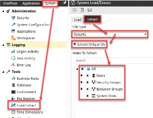
Figure 8.11
Now, you import that XML file into the target environment. To do so, navigate to the System tab > Load/Extract page > Load tab, then navigate to your saved file from the source environment and upload, as shown in Figure 8.12.
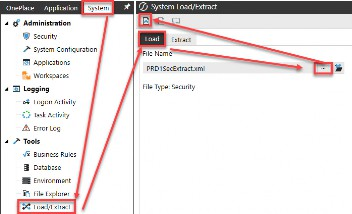
Figure 8.12
In this way, both environments will stay synchronized and – when applications are copied from source to target environment – they will not lose their security.
If both environments have existing users and groups with the same user or group name but with different unique IDs, the import will result in an error message, and it will stop. So, what can be done? You will need to run a Framework Database Copy to get things back in sync. Let’s cover that process next.
Security Tools › Migrating Security
Framework Database Copy
If frequent security changes in a target environment make the traditional extract and import described above impractical, or if you run into an error message when employing the extract and import method, you can copy the entire framework database from the source to the target environment.
This method will synchronize all security records; however, it may result in losing security assignments for existing applications in the target environment. You can take steps to work around this situation, as described below.
Here are the steps involved in copying the entire framework database from the source environment (e.g., PRD1) into a target environment (e.g., DEV1):
Before copying the framework database between environments, extract users and groups from the target environment without unique IDs. This step will allow you to recreate users and groups that already existed in the target environment but might not exist in the source environment in a later step.
Then, again, in the target environment, extract all application components by going to the Application tab > Load/Extract > Extract tab.
Choose Application Zip File (All Except Data and FX) under the File Type dropdown menu (Figure 8.13). Do this for each application in the target environment. You will use these application zip extract files to recreate security for all target applications once the framework database has been copied in a subsequent step.
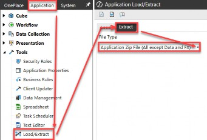
Figure 8.13
Copy the framework database from source to target. This is typically done by opening a support case with OneStream for cloud customers. This step may result in losing the security assignments within existing applications in the target environment (since the Unique IDs are now different).
Import the XML file generated in step 1 to re-create potential users or groups that previously existed in the target environment but not in the source environment (the framework that was copied over).
For each application, import the zip file generated in step 3 in order to restore security against the new users and groups by Unique IDs recreated in the prior step.
Once you have done this, your source and target environments are now synchronized (i.e., unique IDs of users and groups are matched), and every time application databases are copied from source to target, or you choose to use the extract and import method, you should be fine.
You can set up these processes to happen regularly or on a schedule by customizing and creating a scheduled task to extract from one environment and load to a target environment. For example, you may want a regular cadence to extract your security from the production environment and update your development environment, so long as anyone developing is aware of this process and can re-import their work.
Should you run into any issues or have questions when migrating your OneStream security, your OneStream Customer Support Portal can be a great resource for knowledge-based articles and self-service catalog options (Figure 8.14).
Figure 8.14
Security Tools › Migrating Security
Deleting Security Groups
Deleting security groups follows the same discussion points made in Chapter 2 about deleting versus disabling users. The details are different, but some of the same principles apply.
First, let me say I do not recommend deleting security groups unless you are certain that group is not attached to an application or system object. And, as we mentioned earlier in this chapter, there is currently no dashboard, report, or tool (other than one of the two partner Solution Exchange tools) that will allow you to see all the places a security group has been assigned to an application.
Because security groups can be applied to any application or system object within an environment, you would need to extract all your applications (and system security) for an environment to XML files, and search for a particular security group to confirm if the group has – or has not – been assigned to an application or system object.
For this reason, I do not recommend deleting security groups unless you are confident the group has not been used. Instead, my recommendation is simply to rename the security group with a prefix of Z_ and a suffix of _OLD. In this way, you keep the integrity of the existing security group in case it has been assigned to an application or system object of which you are unaware. This is similar to the concept of disabling, but not fully deleting, users. The added bonus of this naming convention is that all obsolete security groups will sort to the bottom of the alphabetical list!
If you delete a security group and it was assigned to an application or system object of which you were unaware, the default group of administrators will be assigned. At least you can rest assured that if you accidentally delete a used security group, the default is for the strictest security to be applied, that of your native administrators group!
Speaking of making changes to security groups, let’s move on to the last section of this book and cover best practices around testing and ensuring your security is behaving as designed.
Security Tools
Testing
The easiest way I have found to evaluate security is to set up a native user ID, apply the security you want to evaluate to that user ID, and then log in as that user. Logged in as that native user, you will be able to navigate to various OneStream screens, confirming access as you go.
If you recall from Chapter 2, the ability to set up native user IDs is a toggle setting of True/False in the Application Server Configuration Settings, which can only be accessed by OneStream Support for cloud customers. Even if your company does not permit long-term native ID access, it is a great idea to have this set to True – during development – so security can be easily and thoroughly vetted before you go live.
After going live, and if this toggle is set to False, you can test security by shadowing or screen sharing with your user to review their access or (as a last resort) have your access temporarily changed to allow you to review access as an end-user. Do not forget that in testing security, administrators have full access to OneStream, so it is hard for a native administrator to confirm or evaluate the end-user experience unless they shadow or use a native ID.
Another clever way to evaluate security, especially data access security, is to set up a Quick View spreadsheet in Excel. In the columns and rows of that Quick View, set up various points of view to which a user should and should not have access. Logging in as a native user with specific access (or shadowing this user in Excel) will allow you – in a spreadsheet – to drill through various hierarchies denoting No Access versus green intersections (read-only access) versus white intersections (write access).
The final key to remember when setting up and testing security is that you will want to put users into security groups (recall the 000_GRP naming convention from Chapter 3) and test group access. You do not want to individually provision a bunch of security groups to a particular user, as this will make it hard to diagnose what is or is not working. Instead, you want to create a group, evaluate the group’s access collectively, and then place users into groups. In this way, you can more efficiently assess and grant access to groups of users with similar needs.
Security Tools
Conclusion
We started the book broadly discussing OneStream’s security framework and environment, and the settings and ways people can access your gated community. Once a user has access to the environment (aka gated community), we moved inside the neighborhood and learned how different sets of users may access houses (aka applications) within the environment.
With the keys to the front door of a particular house in hand, we then took a deep dive into all the elements inside a OneStream application and the myriad ways you can go about securing every corner of your house. We discussed how the simplicity or complexity of your security model will depend on factors, including your user base, your company’s needs, and any regulatory and compliance requirements.
Following your home security, we then took a step back and talked about other tools and ways you can add on or extend your security framework. Much like adding a pool to the backyard of your home may require a new fence to be added, so too will adding additional Solution Exchange tools to your OneStream application. These tools, like a swimming pool, can be a great investment in your application, but they do raise additional security concerns.
Lastly, like with a home, we talked about how you will want to maintain, assess, and report off your investment in OneStream software. I hope that this book has taken you on a trip around your OneStream neighborhood and provided you with a much better understanding and level of confidence in OneStream security!
Account Reconciliation Inventory - 184 Account Reconciliation Manager - 182 Account Reconciliations - 145, 183
Account, Flow & User Defined Security
- 102
Admin Users - 66 Administrator - 2, 16
Ancillary Tables - 13, 144 Application Database - 74 Application Object Tables - 92 Application Objects - 90 Application Reports - 196 Application Roles & Pages - 75 Application Security - 73 Application Security Layer - 35 Application Security Role - 55, 76
Application Security Role, Administration - 67
Application Server Configuration - 7, 8,
71
Application Server Configuration Setting, Security - 14
Application Tables - 91
Application User Interface Roles - 80 Audit Logs - 23
Audit Tables - 92, 94, 143 Azure Restriction - 143
BI Blend - 187
BI Blend, Dashboards - 190 BI Blend, Database - 187